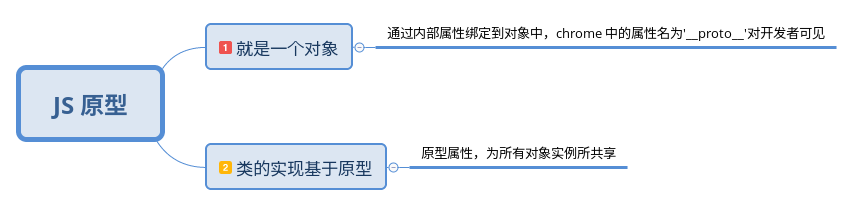
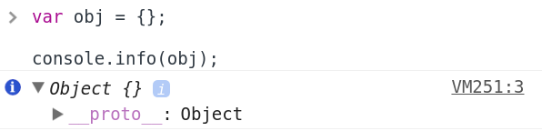
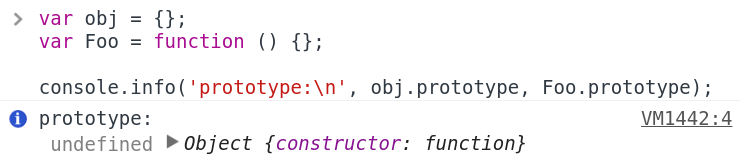
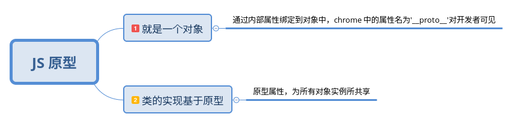
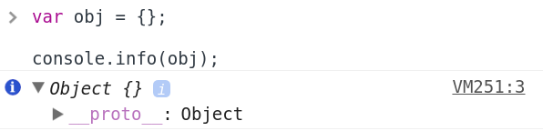
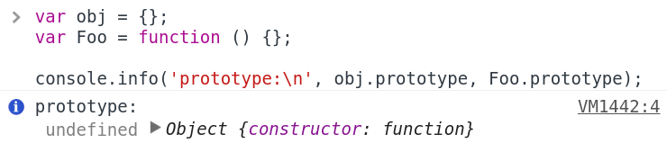

我的理解

__proto__ 还是 prototype ？
__proto__ 是浏览器生产商给出的，用于访问对象的原型，并非 JS 标准中内容，应尽量避免在生产环境中使用

prototype 是构造函数的特有属性，为 JS 标准中的内容，通过构造函数创建的对象会自动引用对应构造函数 prototype 上的属性和方法
值得注意的是：其它对象没有 prototype 属性


__proto__ 是浏览器生产商给出的，用于访问对象的原型，并非 JS 标准中内容，应尽量避免在生产环境中使用

prototype 是构造函数的特有属性，为 JS 标准中的内容，通过构造函数创建的对象会自动引用对应构造函数 prototype 上的属性和方法
值得注意的是：其它对象没有 prototype 属性
